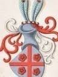

174464 Örjan Karlsson Skancke
* omkring 1400 Hov, Hackås (Z)
† efter 1474 Hov, Hackås (Z)
Riddare, länsherre i Jämtland o Härjedalen, jordägare
* omkring 1400 Hov, Hackås (Z)
† efter 1474 Hov, Hackås (Z)
Riddare, länsherre i Jämtland o Härjedalen, jordägare
348928 Karl Pedersson (Skanke)
* omkring 1360 Hov, Hackås (Z)
† 1430 Hov, Hackås (Z)
Riddare
Blev ca 70 år
* omkring 1360 Hov, Hackås (Z)
† 1430 Hov, Hackås (Z)
Riddare
Blev ca 70 år
697856 Peder Nilsson Skancke
* omkring 1325 Mjälle, Frösö (Z)
† 1360 Hov, Hackås (Z)
Riksråd, underfogde på Frösön
Blev ca 35 år
* omkring 1325 Mjälle, Frösö (Z)
† 1360 Hov, Hackås (Z)
Riksråd, underfogde på Frösön
Blev ca 35 år
1395712 Nikolas Karlsson Skancke
* omkring 1300 Egge, Steinkjer, Norge
† omkring 1355 Våle, Hackås (Z)
Riddare, storman, jordägare
Blev ca 55 år
* omkring 1300 Egge, Steinkjer, Norge
† omkring 1355 Våle, Hackås (Z)
Riddare, storman, jordägare
Blev ca 55 år
1395713 Kristina Östnår (Halvardsdotter)
* 1305 Östnår, Hackås (Z)
† omkring 1360 Våle, Hackås (Z)
Blev ca 55 år
* 1305 Östnår, Hackås (Z)
† omkring 1360 Våle, Hackås (Z)
Blev ca 55 år
697857 Elin Ranesdatter Tunsberg
* omkring 1340 Tönsberg, Norge
† 1430 Vadstena kloster (E)
Blev ca 90 år
* omkring 1340 Tönsberg, Norge
† 1430 Vadstena kloster (E)
Blev ca 90 år
1395714 Rane Eyvindsson (Østby Snekkestad)
* omkring 1310 Tönsberg, Norge
† 1396 Gråbrödreklostret, Tönsberg, Norge
Blev ca 86 år
* omkring 1310 Tönsberg, Norge
† 1396 Gråbrödreklostret, Tönsberg, Norge
Blev ca 86 år

1395715 Åsa Salomonsdatter Selvik
* omkring 1320 Herset, Trogstad, Norge
† 1396 Selvik, Sande, Norge
Blev ca 76 år
* omkring 1320 Herset, Trogstad, Norge
† 1396 Selvik, Sande, Norge
Blev ca 76 år
348929 Rådgjerd Kjettilsdotter
* omkring 1373 Haglid, Sunne (Z)
† omkring 1438 Hov, Hackås (Z)
Blev ca 65 år
* omkring 1373 Haglid, Sunne (Z)
† omkring 1438 Hov, Hackås (Z)
Blev ca 65 år